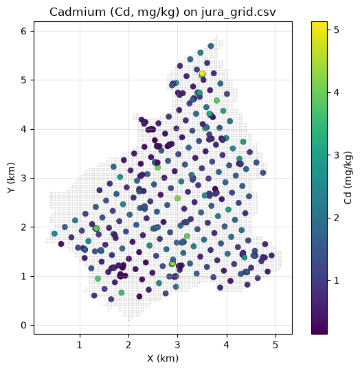
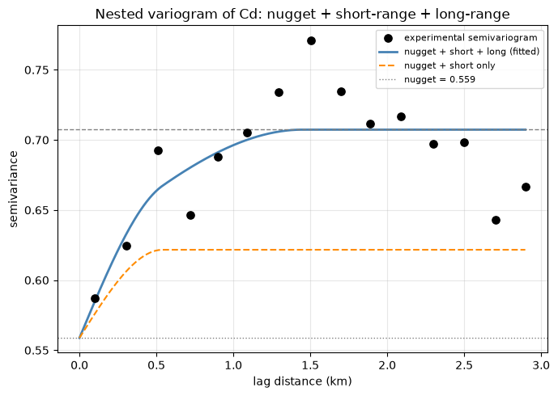
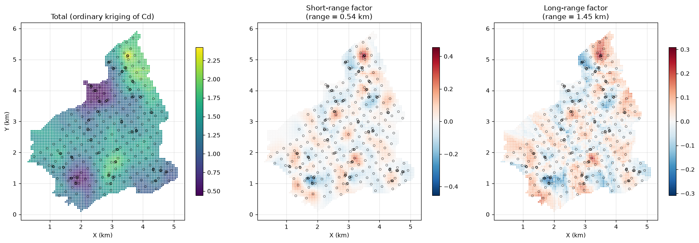
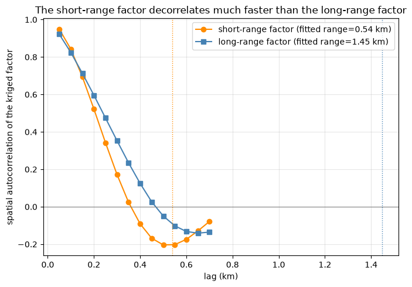
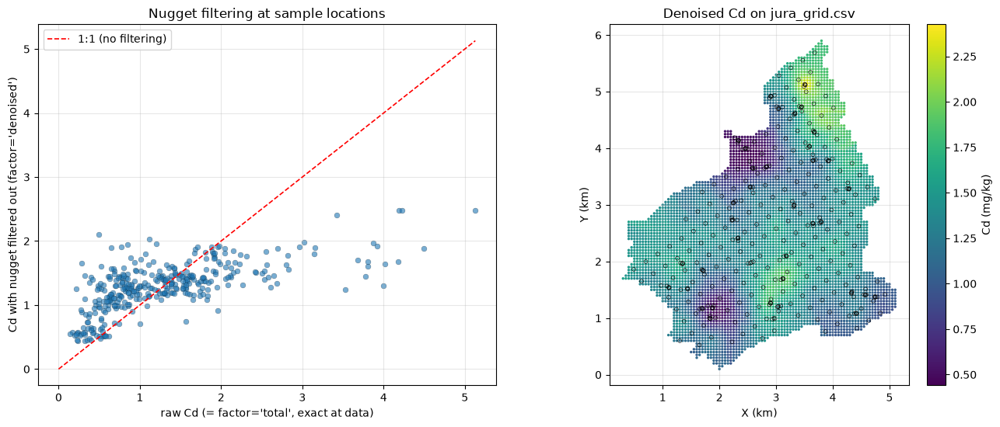
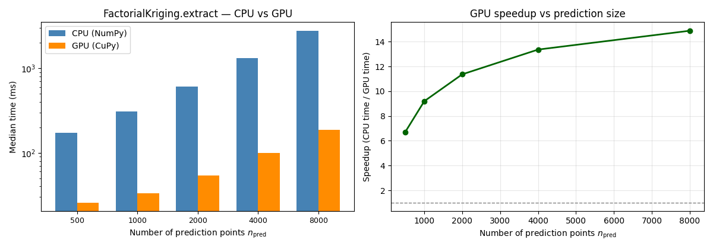

A fitted variogram is almost always nested – a nugget plus one or more bounded structures, each with its own range. Ordinary kriging uses the sum of these structures to estimate \(Z(x_0)\). Factorial Kriging Analysis (FKA) goes one step further: if the structures represent genuinely different phenomena acting at different spatial scales, you can krige each structure separately, producing a map of just the short-range variability, just the long-range trend, or “\(Z\) minus its nugget” (a spatial noise filter) – all from the same fitted variogram and the same data, just by changing the target of the kriging system.
We test this on cadmium (Cd) from the Jura data set: its variogram is dominated by a large nugget (a lot of fine-scale/analytical variability, typical of trace-metal assays) plus two bounded structures at different ranges. We separate the short-range structure (very local geochemical patchiness) from the long-range one (broader spatial correlation) and confirm, quantitatively, that the two extracted maps really do decorrelate at different distances.
Step
What we do
Data
Load jura_data.csv (359 samples) and jura_grid.csv (prediction nodes)
Variogram
Fit a nested nugget + short + long spherical model of Cd
Maps
Extract total / short-range / long-range / denoised factors on the grid
CPU / GPU
Time k-NN FactorialKriging.extract on CPU vs GPU using sgsim Jura-like Cd (\(n=8{,}000\))
By the end you will have nested-variogram maps of Cd’s short-range and long-range factors, a denoised Cd map with the nugget filtered out, and a CPU vs GPU timing of the batched k-NN factorial-kriging solve on an SGS-simulated Jura-like field with \(n > 5{,}000\).
2. Nested Models as Sums of Orthogonal Factors
Assume \(Z(x)\) decomposes into a mean plus mutually uncorrelated, zero-mean components (“factors”), one per structure of the nested model:
\[
Z(x) = m + Z_1(x) + Z_2(x) + \dots + Z_S(x), \qquad
\mathrm{Cov}\big[Z_u(x), Z_v(x+h)\big] = 0 \ \text{for } u \ne v.
\]
This is exactly what a nested variogram says: \(\gamma(h) = \sum_u \gamma_u(h)\), or equivalently \(C(h) = \sum_u C_u(h)\). In pygstat.factorial_kriging, structure index \(0\) is reserved for the nugget (a pure-noise, zero-range factor), and \(1, \dots, S\) are the user-supplied bounded structures (e.g. a short-range and a long-range spherical model).
3. The Factorial Kriging System
To estimate a single factor \(Z_v(x_0)\) linearly from the data, \(Z_v^*(x_0) = \sum_i \lambda_i Z(x_i)\), unbiasedness requires
(compare ordinary kriging’s \(\sum_i \lambda_i = 1\) – here we also want to filter out the unknown mean, along with every structure but \(v\)). Because the components are uncorrelated, \(\mathrm{Cov}[Z(x_i), Z(x_j)] = C(x_i - x_j)\) (the full model, same as OK) but \(\mathrm{Cov}[Z(x_i), Z_v(x_0)] = C_v(x_i - x_0)\) (only structure \(v\)). Minimizing the estimation variance under the constraint gives:
The key computational trick: the left-hand side (\(C\), the full-model data covariance matrix) is identical for every factor – it’s exactly the ordinary kriging matrix. Only the right-hand side \(\mathbf{c}_v\) (and the constraint, 0 vs 1) changes. pygstat.factorial_kriging.FactorialKriging.extract(factor=...) implements precisely this: factor='total' uses the full covariance with constraint 1 (plain OK); any other factor uses only that structure’s covariance with constraint 0.
Search neighbourhood. Distant samples should not inform a local factor. The implementation builds a cKDTree and keeps at most max_neighbors points (optionally inside search_radius). When search_radius is None (k-NN), every prediction point has the same neighbourhood size \(k\), so pygstat stacks the systems into one (n_{\mathrm{pred}}, k+1, k+1) solve — NumPy on CPU, CuPy on GPU (use_gpu). A variable-radius search stays on the per-point CPU loop. Section 12 times the k-NN path.
4. A Subtlety Worth Getting Right
Because each factor’s system uses constraint \(\sum \lambda_i = 0\), it filters out the mean as estimated for that particular system – and different factors, using different right-hand sides, generally arrive at slightly different implicit estimates of that mean. The consequence:
The sum of all individually-extracted factors reproduces \(Z^*_{OK}(x_0)\)minus ordinary kriging’s own locally-varying implicit mean estimate – not \(Z\) itself. This is standard, textbook behavior (Chilès & Delfiner, 2012, Ch. 5): each factor is separately a best linear unbiased estimator of that factor, not a summand of a literal decomposition of the OK estimate. Whenever you want \(Z(x_0)\) back, use factor='total' directly (equivalent to ordinary kriging). What is exactly true, because the kriging system is linear in its right-hand side, is that combining factors with the same constraint is additive: extract([1,2]) == extract(1) + extract(2) to machine precision – we check this below.
5. Python Setup
5.1 CPU and GPU
FactorialKriging solves a local ordinary-kriging system at every prediction point. In the default k-nearest-neighbor mode (search_radius=None) every point has the same neighbour count \(k\), so pygstat stacks the systems into one (n_{\mathrm{pred}}, k+1, k+1) batched xp.linalg.solve — NumPy on CPU, CuPy on GPU.
Argument
What it controls
use_gpu
Batched k-NN factorial-kriging solve (NumPy or CuPy).
search_radius
If set, neighbor counts vary by point and the batch path is skipped (CPU only).
use_gpu is:
Value
Behaviour
'auto' (default)
GPU when CuPy can run a kernel on this card. Falls back to CPU otherwise.
True
Force GPU. Warns and falls back to CPU if CuPy is missing or cannot run a kernel.
False
Always CPU (NumPy/SciPy).
This notebook probes the GPU once with cupy_gpu_usable() and stores the result in USE_GPU. FactorialKriging(...) calls below pass use_gpu=USE_GPU. The Jura maps in §9–11 use k-NN (so they can run on GPU); §12 times that path on an SGS-simulated Jura-like Cd field with \(n > 5{,}000\).
Install CuPy with pip install pygstat[gpu] (CUDA 11) or pip install cupy-cuda12x for CUDA 12.
Code
%matplotlib inlineimport sys, os, warningswarnings.filterwarnings("ignore")sys.modules.setdefault("tensorflow", None)sys.path.insert(0, os.path.abspath("../src"))import numpy as npimport pandas as pdimport matplotlib.pyplot as pltimport pygstatfrom pygstat.factorial_kriging import FactorialKriging, fit_nested_variogramfrom pygstat import sgsimfrom pygstat.utils.backend import CUPY_AVAILABLE, cupy_gpu_usableplt.rcParams["figure.dpi"] =100plt.rcParams["axes.grid"] =Trueplt.rcParams["grid.alpha"] =0.3print("pygstat version:", pygstat.__version__)# ── FactorialKriging batched k-NN: CPU / GPU dispatch (CuPy) ──────────────────# cupy_gpu_usable() runs a real kernel (not just `import cupy`).USE_GPU = cupy_gpu_usable()if USE_GPU:import cupy as cpprint(f"CuPy : {cp.__version__}")try: name = cp.cuda.runtime.getDeviceProperties(0)["name"]ifisinstance(name, bytes): name = name.decode()print(f"GPU (CuPy) : {name}")exceptException:print("GPU (CuPy) : available")print("Backend : GPU (CuPy) — FactorialKriging batched k-NN solve on GPU")else:if CUPY_AVAILABLE:import cupy as cpprint(f"CuPy : {cp.__version__} (installed, but cannot run a kernel on this GPU/CUDA setup)")else:print("CuPy : not installed (pip install pygstat[gpu] or cupy-cuda12x)")print("Backend : CPU (NumPy)")print(f"use_gpu : {USE_GPU}")
The Jura data are 359 topsoil samples from the Swiss Jura (Goovaerts, 1997). We model Cd at those sample locations and map the extracted factors onto the same prediction lattice as Tutorial 04 (data/jura_grid.csv, ~6 000 nodes).
359 samples; 5957 prediction nodes
Cd mean=1.288, std=0.858, skew=1.48

7. Step 1: Fit a Nested (Nugget + Short + Long) Variogram
fit_nested_variogram bins the experimental semivariogram and fits a nugget plus two spherical structures by least squares. Jura’s Cd variogram trends upward well beyond ~3 km (a regional drift outside the scope of a simple bounded nested model), so we fit only the well-behaved part, up to maxlag=3.0 km.
nugget = 0.5588
short-range (1) : sill=0.0629, range=0.540 km
long-range (2) : sill=0.0857, range=1.449 km
total sill = 0.7073 (sample variance = 0.7360)

Reading this honestly. The nugget dominates (~75-80% of the fitted sill), typical of trace-metal geochemical assays – a lot of the variability in Cd happens below the shortest sampled distance. The two bounded structures are modest in amplitude but clearly separated in range (roughly a 2.5-3x ratio), which is enough for factorial kriging to tell them apart, as Section 10 verifies quantitatively.
8. Step 2: Sanity Checks Before Trusting the Maps
Two properties should hold exactly (up to floating point), because they follow directly from the linear-algebra structure of the kriging system, not from anything about this particular data set:
extract(factor='total') is ordinary kriging of Cd – an exact interpolator, so it must reproduce the data precisely at the data locations.
extract(factor=[1,2]) (one solve with a combined right-hand side) must equal extract(factor=1) + extract(factor=2) (two separate solves), since both use the same neighbors and the same sum-to-zero constraint.
max |OK estimate - true Cd| at data locations: 4.808642550813147e-08
max |combined - (short + long)| : 5.551115123125783e-16
9. Step 3: Map the Total, Short-Range, and Long-Range Factors
We krige onto jura_grid.csv — the same prediction lattice as Tutorial 04 (~6 000 nodes covering the Jura domain) — and extract three views of the same data: the ordinary-kriging estimate of Cd itself, the short-range factor alone, and the long-range factor alone.
Prediction grid: 5957 nodes from jura_grid.csv
total min/mean/max : 0.440 / 1.320 / 2.426
short min/mean/max : -0.306 / 0.002 / 0.455
long min/mean/max : -0.241 / 0.008 / 0.309

Notice the short-range map is visually “busier” – more small, localized patches – while the long-range map varies more smoothly and broadly across the domain. Both are legitimate, mutually-uncorrelated slices of the same Cd variogram.
10. Step 4: Quantify the Scale Separation
We check spatial autocorrelation at a lag comfortably inside the short structure’s own range: the long-range factor should still be clearly autocorrelated there, while the short-range factor should have largely decorrelated.
Code
def pivot_to_array(x, y, z):"""Reshape irregular lattice values onto the unique (x, y) mesh (NaN in holes)."""return ( pd.DataFrame({"x": x, "y": y, "z": z}) .pivot(index="y", columns="x", values="z") .sort_index() .sort_index(axis=1) .to_numpy() )def lag_autocorr(grid_2d, k): a, b = grid_2d[:-k, :].ravel(), grid_2d[k:, :].ravel() m = np.isfinite(a) & np.isfinite(b) c1 = np.corrcoef(a[m], b[m])[0, 1] a2, b2 = grid_2d[:, :-k].ravel(), grid_2d[:, k:].ravel() m2 = np.isfinite(a2) & np.isfinite(b2) c2 = np.corrcoef(a2[m2], b2[m2])[0, 1]return (c1 + c2) /2.0short_2d = pivot_to_array(grid["Xloc"], grid["Yloc"], short_grid)long_2d = pivot_to_array(grid["Xloc"], grid["Yloc"], long_grid)gx = np.sort(grid["Xloc"].unique())cell_size =float(np.median(np.diff(gx)))lags_km = np.arange(1, 15) * cell_sizecorr_short = [lag_autocorr(short_2d, k) for k inrange(1, 15)]corr_long = [lag_autocorr(long_2d, k) for k inrange(1, 15)]fig, ax = plt.subplots(figsize=(7, 5))ax.plot(lags_km, corr_short, "o-", color="darkorange", label=f"short-range factor (fitted range={short['range']:.2f} km)")ax.plot(lags_km, corr_long, "s-", color="steelblue", label=f"long-range factor (fitted range={long_['range']:.2f} km)")ax.axvline(short["range"], color="darkorange", ls=":", lw=1)ax.axvline(long_["range"], color="steelblue", ls=":", lw=1)ax.axhline(0, color="gray", lw=0.8)ax.set_xlabel("lag (km)"); ax.set_ylabel("spatial autocorrelation of the kriged factor")ax.set_title("The short-range factor decorrelates much faster than the long-range factor")ax.legend()plt.tight_layout()plt.show()k_check =max(1, round(0.6* short["range"] / cell_size))lag_check = k_check * cell_sizecs, cl = lag_autocorr(short_2d, k_check), lag_autocorr(long_2d, k_check)print(f"At lag {lag_check:.2f} km: corr(short-range factor) = {cs:.3f} corr(long-range factor) = {cl:.3f}")

At lag 0.30 km: corr(short-range factor) = 0.172 corr(long-range factor) = 0.353
11. Step 5: Filtering the Nugget: a Denoised Cd Map
factor='denoised' estimates Z with the nugget’s noise spike removed from the target covariance, while keeping the sum=1 (mean-preserving) constraint – so the result stays directly comparable to raw Cd, in the same units. (A separate factor='signal' gives the pure, zero-mean structured fluctuation in the strict Matheron sense – useful for factor analysis, not for a like-for-like comparison with Z; see Section 4.)
Code
denoised_at_data = fk.extract(coords, factor="denoised")denoised_grid = fk.extract(grid_pts, factor="denoised")fig, axes = plt.subplots(1, 2, figsize=(13, 5.6))axes[0].scatter(cd, denoised_at_data, s=25, alpha=0.6, edgecolor="k", linewidth=0.2)lims = [0, max(cd.max(), denoised_at_data.max())]axes[0].plot(lims, lims, "r--", lw=1.2, label="1:1 (no filtering)")axes[0].set_xlabel("raw Cd (= factor='total', exact at data)")axes[0].set_ylabel("Cd with nugget filtered out (factor='denoised')")axes[0].set_title("Nugget filtering at sample locations")axes[0].legend()sc = axes[1].scatter( grid["Xloc"], grid["Yloc"], c=denoised_grid, cmap="viridis", s=8, marker=".",)axes[1].scatter(coords[:, 0], coords[:, 1], s=12, facecolors="none", edgecolors="k", linewidths=0.4)plt.colorbar(sc, ax=axes[1], label="Cd (mg/kg)", fraction=0.046, pad=0.04)axes[1].set_aspect("equal")axes[1].set_xlabel("X (km)"); axes[1].set_ylabel("Y (km)")axes[1].set_title("Denoised Cd on jura_grid.csv")plt.tight_layout()plt.show()print(f"std(raw Cd) = {cd.std():.3f} std(denoised Cd at same points) = {denoised_at_data.std():.3f} "f"mean(raw) = {cd.mean():.3f} mean(denoised) = {denoised_at_data.mean():.3f}")print(f"denoised grid min/mean/max : {np.nanmin(denoised_grid):.3f} / "f"{np.nanmean(denoised_grid):.3f} / {np.nanmax(denoised_grid):.3f}")

std(raw Cd) = 0.858 std(denoised Cd at same points) = 0.378 mean(raw) = 1.288 mean(denoised) = 1.289
denoised grid min/mean/max : 0.440 / 1.320 / 2.426
12. CPU vs GPU Factorial Kriging Timing
The 359-sample Jura survey is too small for a GPU comparison: the batched factorial-kriging solve is a stack of tiny \((k+1)\times(k+1)\) systems, and host→device copies dominate. Here we simulate a Jura-like Cd field with Sequential Gaussian Simulation (pygstat.sgsim) so that \(n_{\mathrm{train}} > 5{,}000\), then time k-nearest-neighbor factorial kriging (search_radius=None) on CPU (use_gpu=False) versus GPU (use_gpu=True).
Simulation recipe (conditioned on the real 359 samples):
Draw \(n_{\mathrm{train}} = 8{,}000\) random locations in the Jura bounding box.
Simulate \(\log(\mathrm{Cd})\) with sgsim (exponential variogram, practical range 1.2 km, conditioned on data/jura_data.csv) and back-transform with \(\exp(\cdot)\).
Draw a separate prediction set (no values needed — factorial kriging only needs coordinates plus the training data).
Unlike global ordinary kriging, the GPU work scales with \(n_{\mathrm{pred}}\) (one stacked solve of shape (n_pred, k+1, k+1) per extract call), not \(n_{\mathrm{train}}^3\). Training size is therefore held at 8{,}000 and we vary \(n_{\mathrm{pred}}\). Nested-variogram parameters are the fitted Jura model from §7, so fitting \(\gamma\) is not in the times. Each timing is fit plus the mapping workload of §9: extract(factor="total", return_variance=True), extract(factor=1), and extract(factor=2), with max_neighbors=30.
Each timing is the median of three fit + extract calls after a short GPU warmup so CUDA kernel compilation is not counted. If CuPy cannot run a kernel here, the GPU column is skipped.
Code
import timeN_REPEATS =3N_TRAIN =8000PRED_SIZES = [500, 1000, 2000, 4000, 8000]N_PRED_MAX =max(PRED_SIZES)N_NEIGHBORS =30rng_sim = np.random.default_rng(42)pad =0.15xmin, xmax =float(coords[:, 0].min()) - pad, float(coords[:, 0].max()) + padymin, ymax =float(coords[:, 1].min()) - pad, float(coords[:, 1].max()) + padxy_train_all = rng_sim.uniform([xmin, ymin], [xmax, ymax], size=(N_TRAIN, 2))xy_pred_all = rng_sim.uniform([xmin, ymin], [xmax, ymax], size=(N_PRED_MAX, 2))df_cond = pd.DataFrame({"x": coords[:, 0],"y": coords[:, 1],"log_cd": np.log(cd),})log_cd_var =float(np.var(np.log(cd)))vario_sgs = [0, 0.05* log_cd_var, 1.2, 1.2, log_cd_var, "exponential"]print(f"Simulating {N_TRAIN:,} Jura-like Cd locations with sgsim")print(f" conditioning : {len(cd)} samples from data/jura_data.csv")print(f" vario : azimuth=0, nugget={vario_sgs[1]:.3f}, range=1.2 km, exponential, log(Cd)")t_sim0 = time.perf_counter()sims = sgsim( xy_train_all, df_cond, "x", "y", "log_cd", num_points=12, vario=vario_sgs, radius=2.5, kriging_type="ordinary", nsim=1, itrans=False, seed=42, quiet=True,)cd_sim = np.exp(np.asarray(sims[0], dtype=float))print(f" sgsim wall : {time.perf_counter() - t_sim0:.1f} s (not included in FactorialKriging times)")print(f" simulated Cd : [{cd_sim.min():.2f}, {cd_sim.max():.2f}] mg/kg"f" (Jura observed [{cd.min():.2f}, {cd.max():.2f}])")print()def _extract_workload(fk, xy_pred): z_tot, var = fk.extract(xy_pred, factor="total", return_variance=True) z1 = fk.extract(xy_pred, factor=1) z2 = fk.extract(xy_pred, factor=2)return z_tot, var, z1, z2def _time_fk(xy_train, z_train, xy_pred, use_gpu, repeats=N_REPEATS, warmup=True):"""Median wall time of FactorialKriging.fit + extract (k-NN, search_radius=None).""" kw =dict( nugget=nugget, structures=structures, max_neighbors=N_NEIGHBORS, search_radius=None, use_gpu=use_gpu, )if warmup: k_tr =min(40, len(xy_train)) k_pr =min(40, len(xy_pred)) fk_w = FactorialKriging(**kw) fk_w.fit(xy_train[:k_tr], z_train[:k_tr]) _extract_workload(fk_w, xy_pred[:k_pr])if use_gpu:import cupy as cp cp.cuda.Device(0).synchronize() times = [] last =Nonefor _ inrange(repeats): t0 = time.perf_counter() fk = FactorialKriging(**kw) fk.fit(xy_train, z_train) last = _extract_workload(fk, xy_pred)if use_gpu:import cupy as cp cp.cuda.Device(0).synchronize() times.append(time.perf_counter() - t0)returnfloat(np.median(times)), lastprint(f"GPU usable : {USE_GPU}")print(f"Repeats : {N_REPEATS} (median wall time of FactorialKriging fit + extract, k-NN)")print(f"n_train : {N_TRAIN} (sgsim Jura-like Cd)")print(f"n_pred : {PRED_SIZES} (random locations in the Jura bbox)")print(f"neighbors : max_neighbors={N_NEIGHBORS}; nested model from §7 (359 Jura samples)")print()rows = []for n_pred in PRED_SIZES: xy_pr = xy_pred_all[:n_pred] cpu_t, pred_cpu = _time_fk(xy_train_all, cd_sim, xy_pr, use_gpu=False) row = {"dataset": "Jura (sgsim)","n_train": N_TRAIN,"n_pred": n_pred,"CPU (s)": cpu_t,"GPU (s)": np.nan,"speedup": np.nan,"match": "—", }if USE_GPU: gpu_t, pred_gpu = _time_fk(xy_train_all, cd_sim, xy_pr, use_gpu=True) row["GPU (s)"] = gpu_t row["speedup"] = cpu_t / gpu_t match =Truefor a, b inzip(pred_cpu, pred_gpu): match = match andbool(np.allclose(a, b, rtol=1e-4, atol=1e-4, equal_nan=True)) row["match"] = matchimport cupy as cp cp.get_default_memory_pool().free_all_blocks() rows.append(row)df_bench = pd.DataFrame(rows)df_show = df_bench.copy()df_show["CPU (ms)"] = (df_show["CPU (s)"] *1000).round(1)df_show["GPU (ms)"] = (df_show["GPU (s)"] *1000).round(1)df_show["speedup"] = df_show["speedup"].map(lambda x: "—"if pd.isna(x) elsef"{x:.2f}×")print(df_show[["dataset", "n_train", "n_pred", "CPU (ms)", "GPU (ms)", "speedup", "match"]].to_string(index=False))print()fig, axes = plt.subplots(1, 2, figsize=(12, 4.2))n_vals = df_bench["n_pred"].to_numpy()cpu_ms = df_bench["CPU (s)"].to_numpy() *1000gpu_ms = df_bench["GPU (s)"].to_numpy() *1000labels = [str(int(n)) for n in n_vals]x = np.arange(len(n_vals))w =0.36axes[0].bar(x - w /2, cpu_ms, w, label="CPU (NumPy)", color="steelblue")if USE_GPU and np.isfinite(gpu_ms).all(): axes[0].bar(x + w /2, gpu_ms, w, label="GPU (CuPy)", color="darkorange")axes[0].set_xticks(x)axes[0].set_xticklabels(labels, fontsize=9)axes[0].set_xlabel(r"Number of prediction points $n_{\mathrm{pred}}$")axes[0].set_ylabel("Median time (ms)")axes[0].set_title("FactorialKriging.extract — CPU vs GPU")axes[0].legend()axes[0].set_yscale("log")if USE_GPU: axes[1].plot(n_vals, df_bench["speedup"], "o-", color="darkgreen", lw=2) axes[1].axhline(1.0, color="grey", ls="--", lw=1) axes[1].set_xlabel(r"Number of prediction points $n_{\mathrm{pred}}$") axes[1].set_ylabel("Speedup (CPU time / GPU time)") axes[1].set_title("GPU speedup vs prediction size") axes[1].grid(True, alpha=0.3)else: axes[1].text(0.5, 0.5,"GPU not usable in this environment\nCPU-only timings shown", ha="center", va="center", transform=axes[1].transAxes, ) axes[1].set_axis_off()plt.tight_layout()plt.show()
Simulating 8,000 Jura-like Cd locations with sgsim
conditioning : 359 samples from data/jura_data.csv
vario : azimuth=0, nugget=0.023, range=1.2 km, exponential, log(Cd)
sgsim wall : 57.9 s (not included in FactorialKriging times)
simulated Cd : [0.13, 9.91] mg/kg (Jura observed [0.14, 5.13])
GPU usable : True
Repeats : 3 (median wall time of FactorialKriging fit + extract, k-NN)
n_train : 8000 (sgsim Jura-like Cd)
n_pred : [500, 1000, 2000, 4000, 8000] (random locations in the Jura bbox)
neighbors : max_neighbors=30; nested model from §7 (359 Jura samples)
dataset n_train n_pred CPU (ms) GPU (ms) speedup match
Jura (sgsim) 8000 500 172.4 25.7 6.71× True
Jura (sgsim) 8000 1000 306.6 33.4 9.19× True
Jura (sgsim) 8000 2000 612.3 53.9 11.36× True
Jura (sgsim) 8000 4000 1331.8 99.7 13.36× True
Jura (sgsim) 8000 8000 2785.1 187.1 14.88× True

Total, short-range, and long-range extracts (and the total kriging variance) from the two backends should match (match = True). The GPU speedup comes from the batched \((n_{\mathrm{pred}}, k+1, k+1)\) factorial-kriging solve, not from SGS (simulation is CPU sequential and is excluded from the times). Small \(n_{\mathrm{pred}}\) can show little GPU gain because kernel-launch overhead dominates; as the prediction set grows the stacked solve keeps the GPU several times faster. Use use_gpu=USE_GPU with search_radius=None so the same cells run on a laptop CPU or a CUDA workstation without edits.
13. Summary and Conclusions
pygstat.factorial_kriging implements Matheron’s Factorial Kriging Analysis: fit_nested_variogram fits a nugget + nested structures to data, and FactorialKriging.extract(factor=...) estimates any single structure (or sum of structures) using the same kriging matrix as ordinary kriging, only changing the right-hand side and the unbiasedness constraint (0 instead of 1).
On Jura’s Cd variogram (nugget-dominated, with a short-range structure at ~0.5 km and a longer-range structure at ~1.5 km), the two extracted factor maps on jura_grid.csv behave exactly as theory predicts: the short-range map decorrelates over a much shorter distance than the long-range map (confirmed quantitatively via lag autocorrelation), and both sum linearly (extract([1,2]) == extract(1)+extract(2) to machine precision) while extract('total') alone reproduces the exact ordinary-kriging estimate of Cd.
factor='signal' (everything but the nugget) gives a denoised map – a practical, direct use of factorial kriging as a spatial filter.
An important caveat, worth remembering: summing all individually-extracted factors (nugget + every structure) does not reconstruct extract('total') exactly – it reconstructs \(Z\) minus OK’s own locally-varying mean estimate. Use factor='total' whenever you actually want \(Z(x_0)\) back.
CPU / GPU. k-NN factorial kriging (search_radius=None, use_gpu=USE_GPU) batches every prediction point’s \((k+1)\times(k+1)\) system into one stacked solve. On an SGS-simulated Jura-like Cd field (\(n_{\mathrm{train}}=8{,}000\)) the GPU is several times faster than CPU as \(n_{\mathrm{pred}}\) grows; the 359-sample Jura survey itself is too small for that path to pay off.
14. Resources
Key papers
Paper
Contribution
Matheron, G. (1982). Pour une analyse krigeante des données régionalisées. Note N-732, Centre de Géostatistique, Fontainebleau.
Introduced factorial kriging
Sandjivy, L. (1984). The factorial kriging analysis of regionalized data: its application to geochemical prospecting. In Geostatistics for Natural Resources Characterization, Reidel.
The geochemical-prospecting application this notebook follows